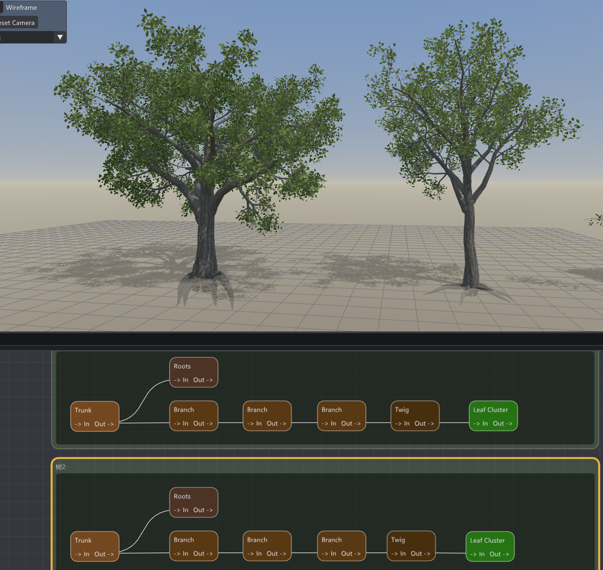
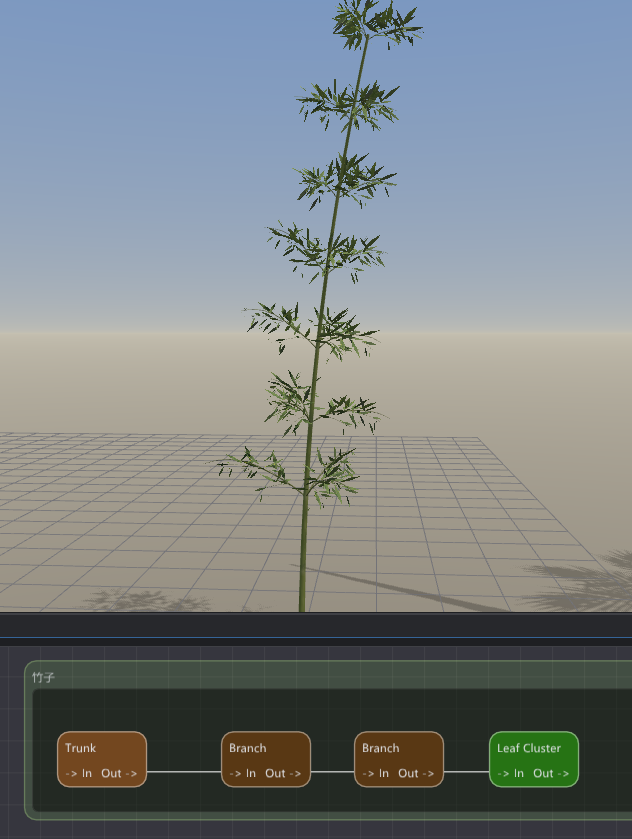
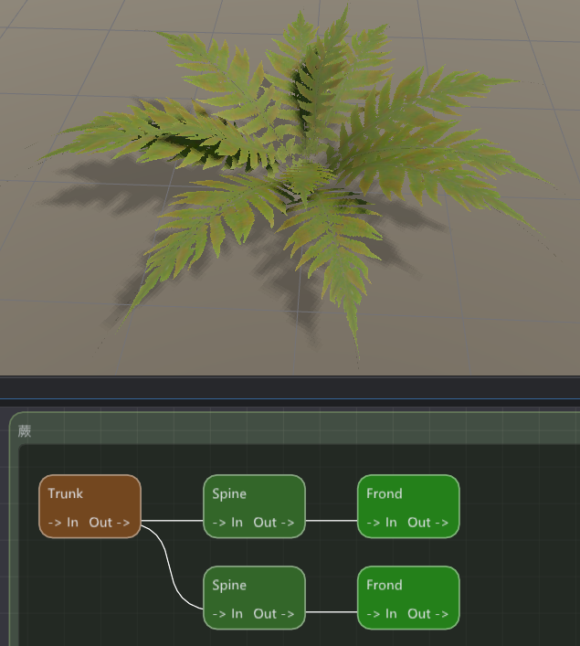

应用场景
你能用它做什么
节点就那么几个，组合起来能覆盖的植物种类相当广。
🌳
各种乔木灌木
调树干弯曲与扭曲，从笔直白桦到虬结老树；改枝条重力，柳树垂枝、松树平展枝都能做。
🎍
竹子
内置"竹节"参数，沿枝干周期性鼓起一圈，配上笔直竿子，竹味立刻就出来。
🌿
蕨类与棕榈
专门的"叶轴 + 羽叶"节点，画出自然下垂的脊线，铺开一整片带锯齿边缘的连续大叶片。
🍃
精细叶片形状
内置轮廓裁剪编辑器，手点或自动识别边缘，让叶片贴合真实剪影，更真实也更高效。
💨
自带风吹摆动
天生就会随风轻摆，每片叶子各自抖动、节奏略有不同，不依赖骨骼，导出后也能带走。
📦
一键导出 & 批量
整株、单枝叶标本、一次多个随机变体，直接导出通用 OBJ，拿到任何引擎里用。


